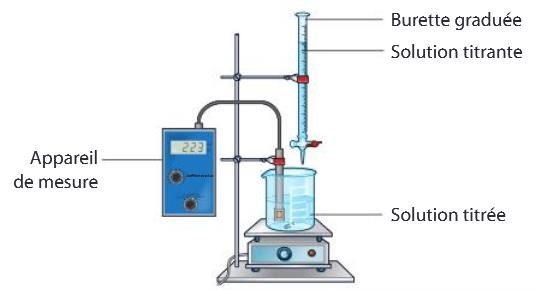
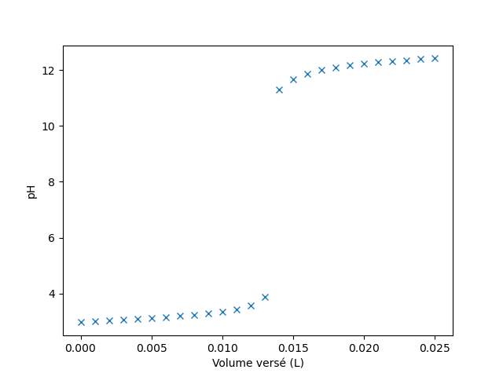
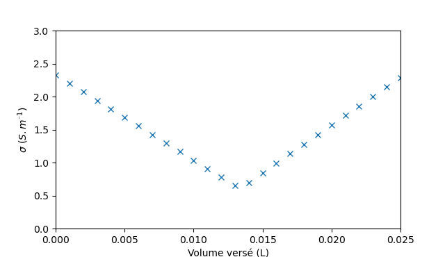
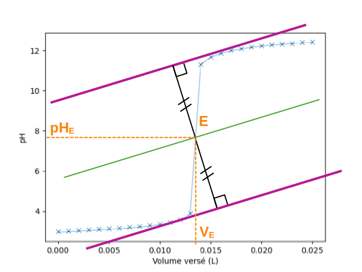
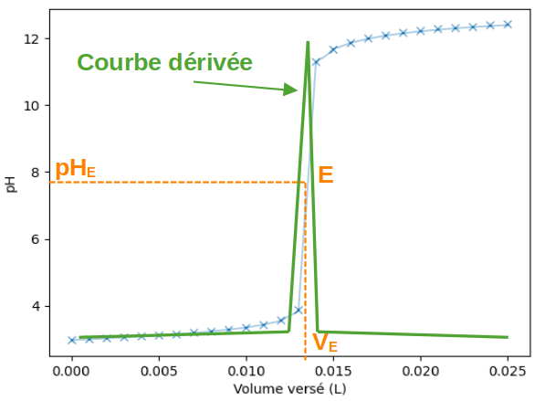
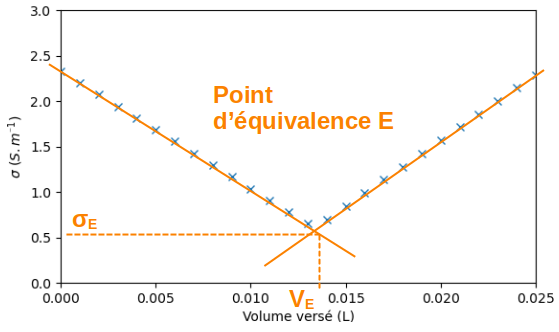

| Suivi par pH-métrie |
Suivi par conductimétrie |
| Condition |
| La réaction support du titrage doit être une réaction acide-base |
La réaction support du titrage fait intervenir des ions |
| Montage |

|
| Appareil de mesure : pH-mètre |
Appareil de mesure : Conductimètre |
| Mode opératoire |
| Pour déterminer précisément l'équivalence, il convient de resserrer les mesures à l'approche de l'équivalence |
- Le suivi peut se faire en versant la solution titrante mL par mL.
- Un grand volume d'eau est versé initialement pour négliger les effets de la dilution qui surviendra ensuite.
|
| Courbe de titrage |
Courbe représentant un saut de pH

|
Courbe présentant une rupture de pente (deux segments de droites).

|
| |
L'évolution de la conductivité s'explique par l'évolution des quantités de matière des ions présents dans le bécher :
- si nion diminue, la contribution de l'ion à la conductivité diminue
- si nion augmente, la contribution de l'ion à la conductivité augmente
- si nion reste constante, l'ion n'a pas d'impact sur l'évolution de la conductivité.
La contribution de chaque ion doit être prise en compte, y compris celle des ions spectateurs. Cette contribution dépend aussi des conductivités ioniques molaires λion.
| Évolution des quantités de matière |
| Espèce chimique |
Avant équivalence |
Après équivalence |
| Ion titré |
↘ réagit avec le réactif titrant |
0 |
| Ion spectateur contenu dans le bécher |
= |
= |
| Ion titrant |
0 réagit à mesure avec le réactif titré |
↗ réaction terminée car plus de réactif titré |
| Ion spectateur ajouté avec réactif titrant |
↗ |
↗ |
- Avant l'équivalence, les ions titrés disparaissent mais les ion spectateurs s'accumulent. Il faut comparer leurs conductivité ionique molaire pour déterminer la pente de la courbe.
- Après l'équivalence, la pente est positive car les ions titrants et les ions spectateurs ajoutés avec s'accumulent dans le bécher
|
| Détermination de VE |
L'équivalence du titrage peut être repérée par :
- La méthode des tangentes

- La méthode de la courbe dérivée

|
L'équivalence du titrage est repérée grâce à l'intersection des segments.

|